Monschau Altstadt
NoteConfirmed by multiple distinct sights within this single extended cluster (12:28–13:44): the Sandskulpturen Monschau exhibit (sand-carving signage and works-in-progress), the Rotes Haus (the red-and-slate merchant mansion on the market square), a panoramic view of the half-timbered old town with Monschau Castle on the hill above, and a close-up of the castle's stone walls. All sit within Monschau's compact, walkable old town, consistent with the cluster radius.
Monschau is the kind of town that looks entirely staged for a postcard and turns out, disappointingly for the cynical traveller, to be almost entirely real: a knot of black-slate, half-timbered houses stacked up both banks of the narrow Rur river, overlooked by the ruins of a castle the Dukes of Limburg began building around 1190 and never quite got around to finishing off properly. What saved the town from modernisation was, with pleasing irony, the very industry that built it -- the fine-wool cloth trade that flourished here from the 17th century on, thanks to the Rur's unusually soft, lime-free water, apparently ideal for washing and dyeing wool, and presumably very little else.
The grandest legacy of that trade is the Rotes Haus, the crimson-fronted mansion built around 1760 by cloth magnate Johann Heinrich Scheibler, whose family exported 'Monschau fine cloth' across Europe and used the house as both residence and trading office for over two centuries, blurring the line between home and work long before it became fashionable to complain about; its self-supporting oak spiral staircase, carved with scenes of cloth production, still stands, presumably lecturing visitors on textiles to this day. Just outside the old town, the more recent Sandskulpturen Monschau exhibit -- sculptures carved from roughly 1,000 tons of sand by professional carvers working in a converted factory building -- gives the valley a very different, and considerably less permanent, reason to stop.
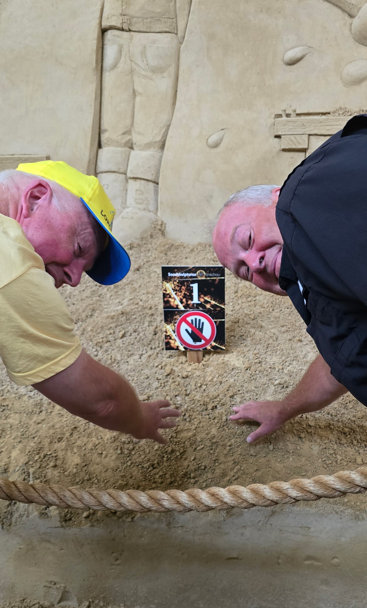
Monschau Altstadt — Church Tower & Castle Overlook
NotePhotos in this cluster actually show Monschau's Evangelical church tower (clock face, weathervane, and the Latin inscription DEUS REFUGIUM NOSTRUM carved above the entrance) and a hillside overlook of the Altstadt and Monschau Castle ruins -- not the sand-sculpture exhibit this entry was originally filed under. The roughly 400m offset from cluster 0's centroid reflects a real short uphill walk to the overlook, not a GPS glitch.
A short climb from the Altstadt leads up to Monschau's Evangelical church, its slim clock tower topped with a weathervane and flag, and, carved into the stone above the entrance, DEUS REFUGIUM NOSTRUM -- "God is our refuge." The congregation traces back to the same Reformed cloth-merchant families, the Scheiblers among them, whose fortunes built the half-timbered houses lining the valley below; a Protestant church of this size was itself a statement in a region that stayed largely Catholic, one more mark of how thoroughly the cloth trade shaped the town.
From the churchyard the ground keeps climbing to a proper overlook: the Rur curling below a footbridge, half-timbered houses and a restaurant sign crowded along the riverbank, and Monschau Castle's ruined walls holding the hilltop behind it all. It's the same view the castle's original occupants would have had of the town they once ruled over -- the valley the Scheiblers eventually inherited, church and castle framing it from opposite hills.
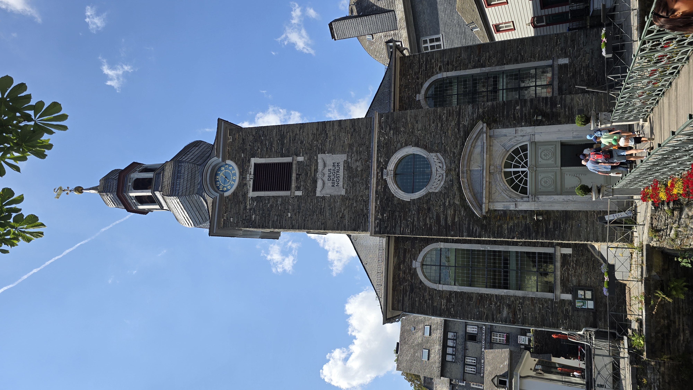
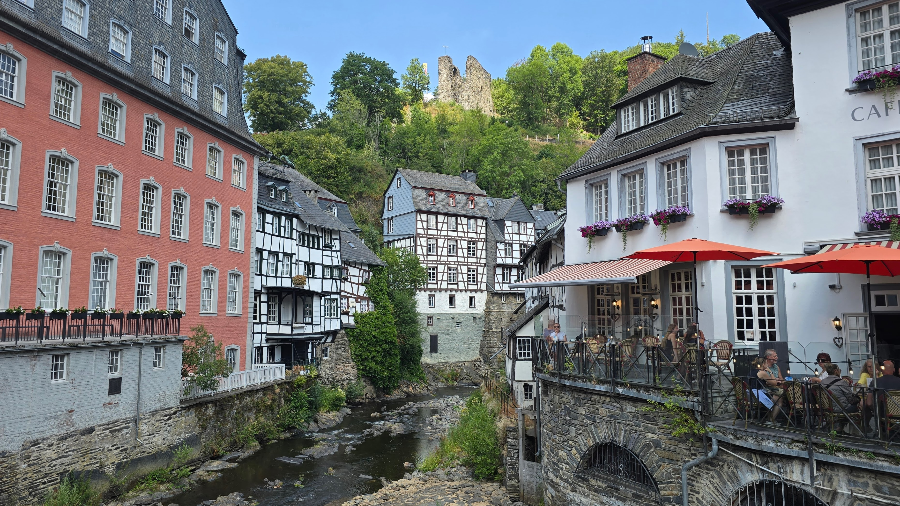
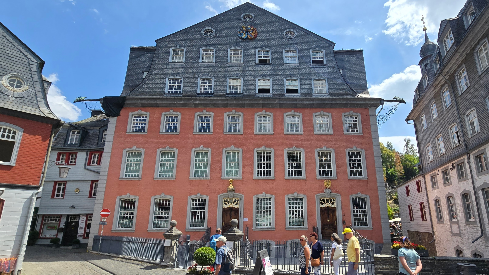
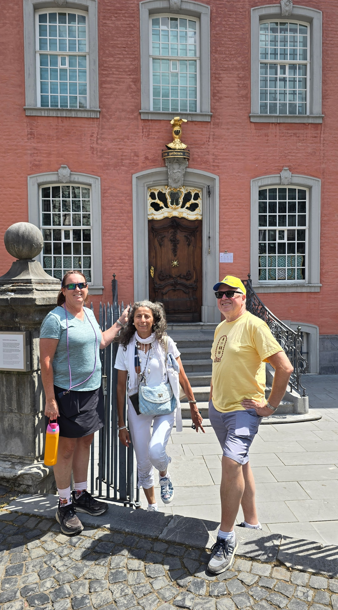
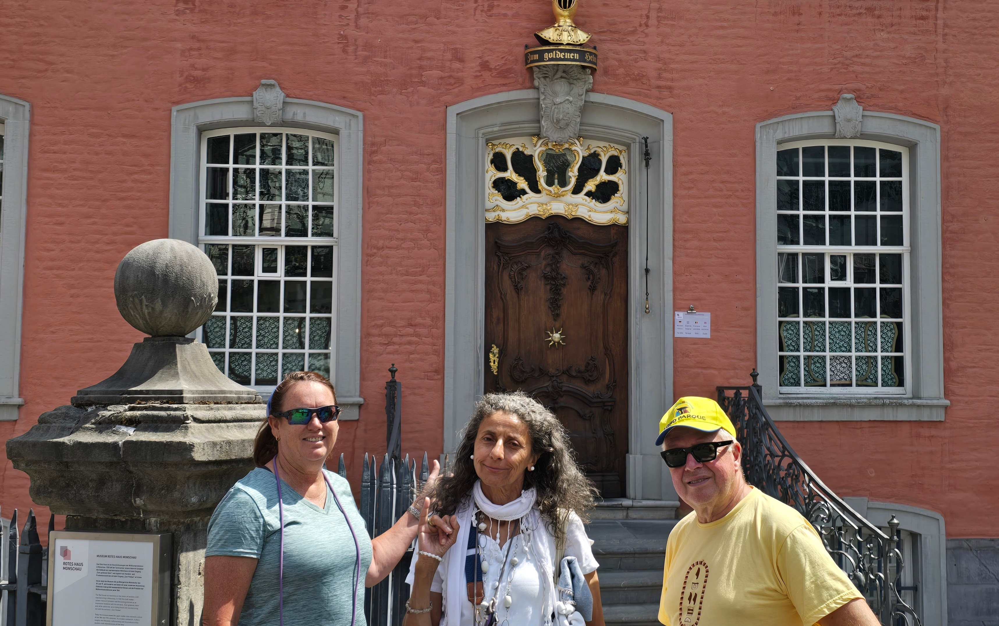
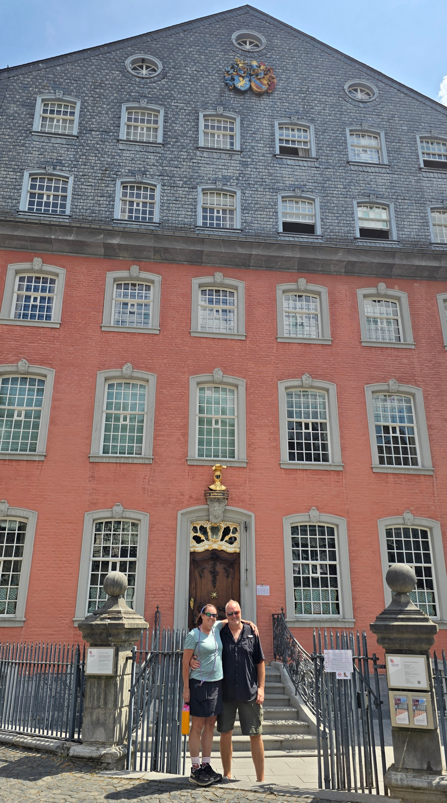
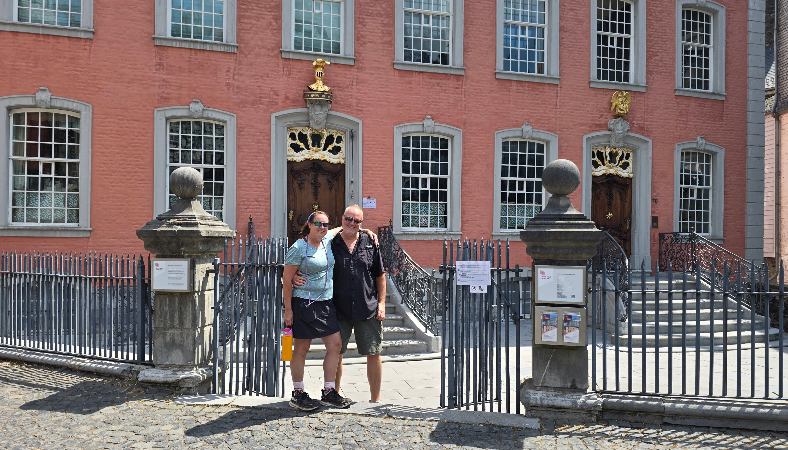
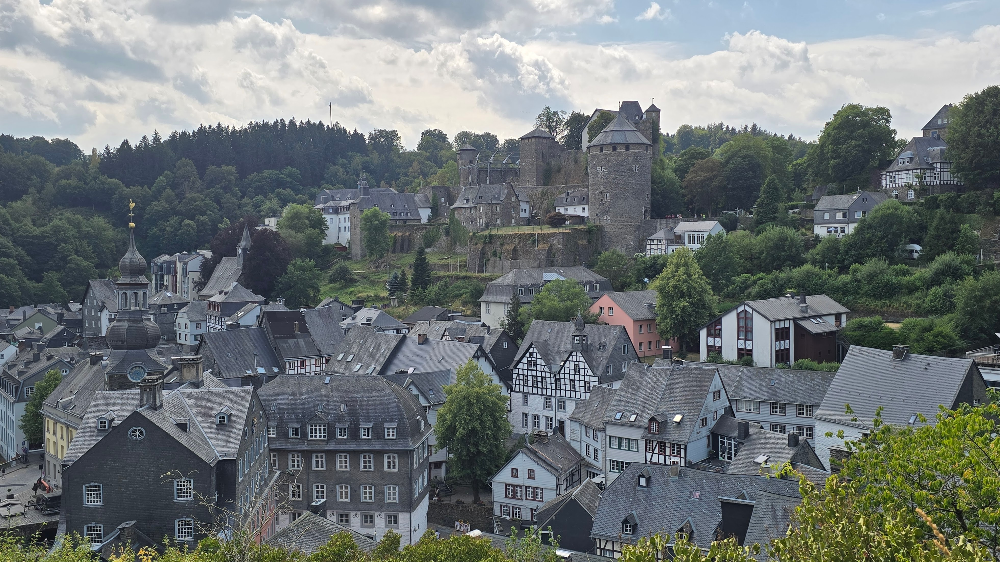
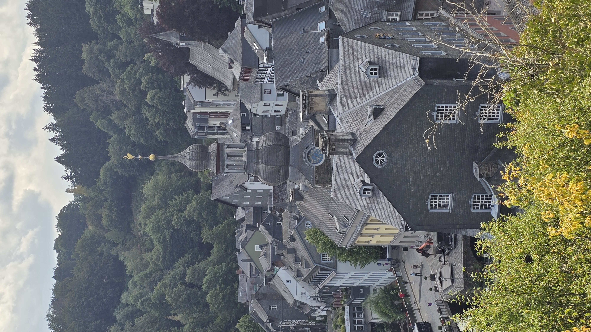
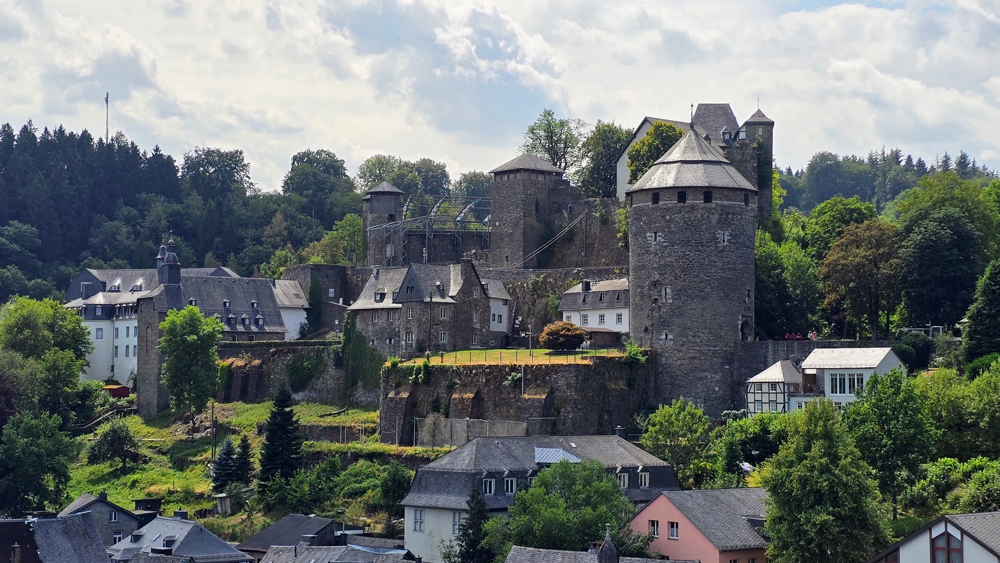
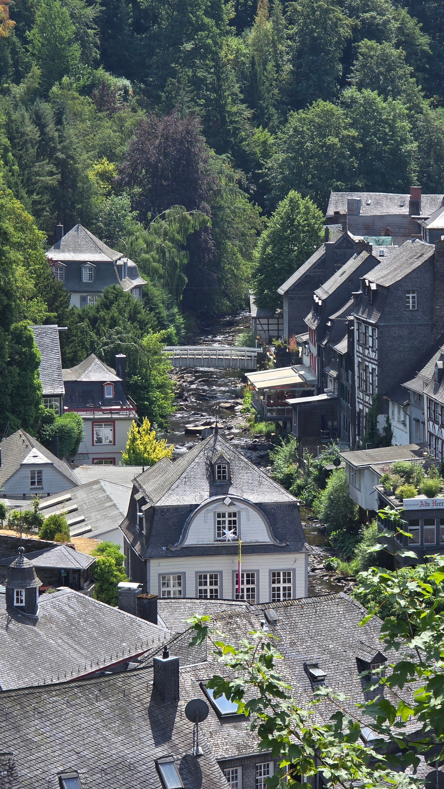
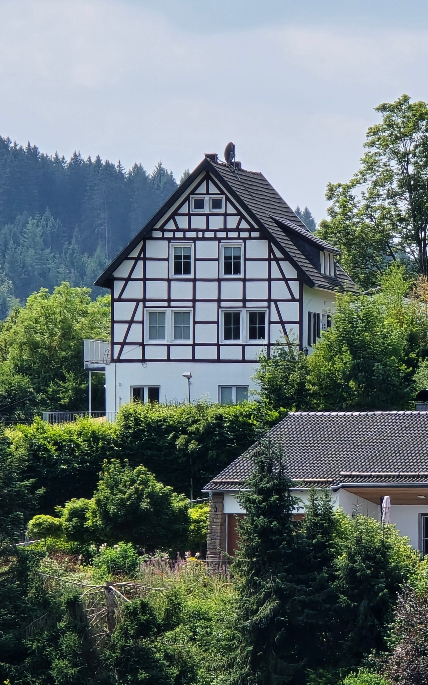
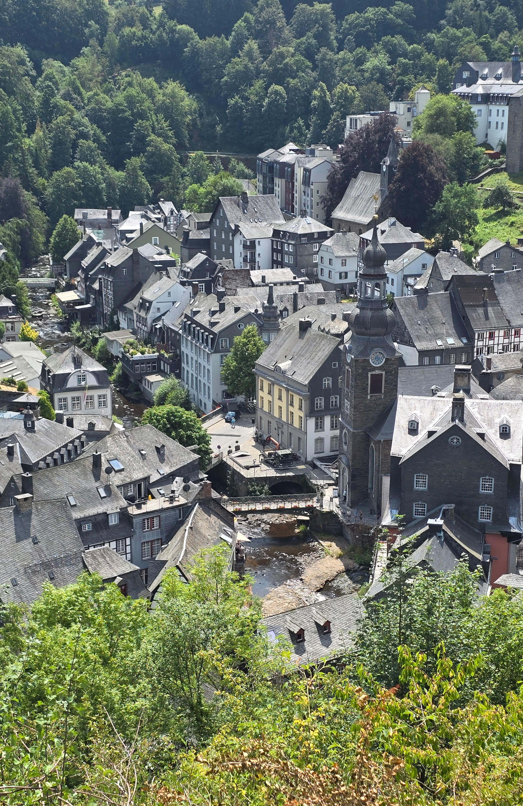
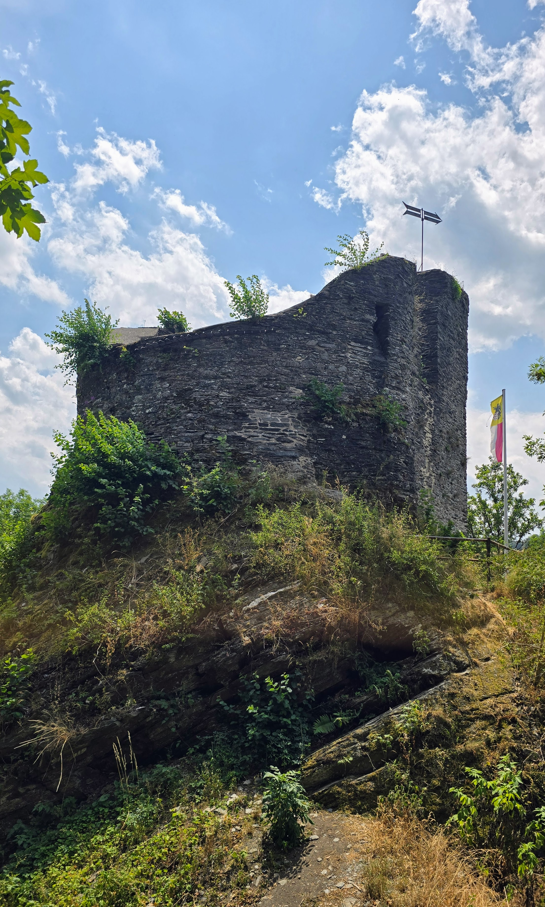